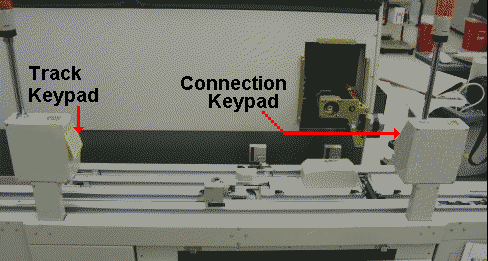
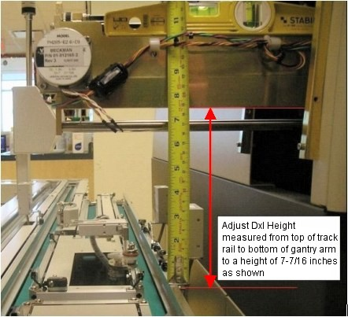

Reattaching DxI and LAS Connection Unit
This procedure describes how to attach a DxI instrument to a lab automation system (LAS) connection unit.
For instructions on servicing an instrument connected to an LAS, refer to the LAS: Servicing Instruments Connected to LAS procedure.
Confirm completion of each of these tasks:
- Pause LAS sample tube loading.
- LAS mode set to Offline.
- Release captive tubes from connection unit.
Note: For instructions, refer to the
LAS: Servicing Instruments Connected to LAS procedure.
- Connect the serial cable from the connection unit to the COM A/1 port on the DxI instrument. The COM ports are located to the right of the power connector on the DxI instrument.
-
If the SPOTB housing is present, remove the housing from the rear cover of the DxI instrument.
Note: SPOTB is an acronym for sample-pipettor-out-the-back.
-
Manually load and pause an auto-aliquot tube.
Note: The auto-aliquot tube provides an alignment target for the sample pipettor. The alignment requires a bar-code labeled 13x100 auto-aliquot tube in a 13x100 or 13x75 carrier (whichever is used on the LAS), as the alignment tool.
-
Bypass normal operations of the connection unit.

- On the track keypad, press the [Auto / Manual] key to toggle to Manual mode.
- On the track keypad, press the [+] key repeatedly until the display shows 01, then press [Enter].
- On the connection keypad, press the [Auto / Manual] key to toggle to Manual mode.
- On the connection keypad, press the [+] key repeatedly until the display shows 50, then press [Enter].
- On the connection keypad, press the [+] key repeatedly until the display shows 51, then press [Enter].
- On the connection keypad, press the [Auto / Manual] key to toggle to Auto mode.
-
Insert an auto-aliquot tube into a tube carrier, and apply an LAS-readable bar code label to the exposed surface of the tube.
If a tube is loaded without an LAS-readable bar code label, an alarm occurs at the connection unit keypad.
-
Insert the tube and carrier onto the connection unit track.

-
Observe the tube as it moves through the connection unit track, stopping at the aspiration position. When the gripper begins to close on the tube, press the
[Pause / Run] key.

This action pauses the tube indefinitely, secured in the gripper. Keep the tube paused in this position while performing track alignments or RF level sense testing.
-
Bypass normal operations of the connection unit.
-
Prepare to align the sample pipettor.
- From the Main Menu, select Diagnostics > Device Diagnostics > Mechanics > Alignments.
- Select Sample Pipettor as the device and Track Position as the position.
- Select Alignments / Offsets > Semi-Auto Alignment.
-
Ignore the screen prompt to load the sample carrier (the carrier is loaded already). Select
OK.
Note: The instrument moves the sample pipettor to a default position, and disables the pipettor motors, allowing the sample pipettor to be moved manually.
-
Dock the DxI instrument to the connection unit.
Note: If installing or attaching the DxI instrument to a DxA system then:
- refer to LAS: Installing Castor Spacers For Use With DxA procedure.
- (if required) refer to LAS: Installing Seismic Mounting Brackets on the DxI procedure.
-
Manually raise the sample pipettor to its upper limit, and then gently move the DxI instrument into an intersecting position with the connection unit so that:
- The DxI instrument is in light contact with the large metal bracket (fully extended) at the base of the connection unit.
- The DxI instrument is parallel to the connection unit track.
- The sample probe can be centered manually in the auto-aliquot tube at the track aspiration point.
- Temporarily place the SPOTB housing on the mounting brackets. Test the fit with the track. The openings for tube passage must line up directly over the track conveyors. Move the DxI instrument in or out as required.
- Lower each of the four leveling feet until they engage firmly with the floor (hand-tighten, plus a minimum of one turn).
-
Adjust the height of the instrument.
-
If necessary, fine-tune the alignments by physically adjusting the position of the DxI instrument.
This position must meet the following requirements:
- The DxI instrument is parallel to and level with the connection unit.
- The sample probe is centered left-to-right (x-axis) and plumb (z-axis) with the auto-aliquot tube.
- The SPOTB housing does not block the path of tubes running through it.
The DxI instrument is not secured to the connection unit bracket (no screws are provided). The bracket serves only as a spacing guide.
-
Rotate the four adjustable feet under the DxI instrument to achieve a separation of approximately 7- 7/16 inches between the bottom of the pipettor gantry and the top of the LAS track.
Note:
- Adjusting the DxI instrument to raise the wheels off the floor by about 1/8 inch is sufficient typically.
- It is important also to level the DxI instrument front to back and side to side.
- Mark the position of the feet on the floor to aid alignment following service in the future.

-
If necessary, fine-tune the alignments by physically adjusting the position of the DxI instrument.
-
Align the sample pipettor to the track position.
-
Move the sample pipettor so that the probe tip is in contact with the bottom of and centered in the auto-aliquot tube. Select
OK.
The sample pipettor seeks the x- and z-home sensors and records the step counts from the alignment position.
- Ignore the screen prompt to release the sample carrier (leave the carrier in place). Select OK.
-
Move the sample pipettor so that the probe tip is in contact with the bottom of and centered in the auto-aliquot tube. Select
OK.
-
Verify the sample pipettor track alignment.
- Select Move Z to Position (Track).
- Verify the sample probe tip is back to the bottom and center of the auto-aliquot tube.
-
Gently wiggle the probe tip from side-to-side while it is in the auto-aliquot tube. Note if the probe tip slides lightly against the bottom of the tube. Adjust the z-offset, if necessary, to achieve a light touch to the bottom surface of the tube.
Adjust the z-offset, if the z alignment is:
- Too low— the probe tip is tight against the bottom surface of the auto-aliquot tube.
- Too high—the probe tip does not touch the bottom surface of the auto-aliquot tube.
-
Verify the z-current position (not the z-offset) is between -740 and -1020, when the pipettor is moved to the z-position.
If the z-current position is not between -740 and -1020 with the probe lightly touching the bottom surface, then raise (or lower) the instrument using the leveling feet.
- To make the z-current position more negative, raise the DxI instrument. Repeat the semi-auto alignment to the track position.
- To make the z-current position less negative, lower the DxI instrument. Repeat the semi-auto alignment to the track position.
Caution: To avoid damaging the probe, home the pipettor before adjusting the height of the DxI instrument.Note:- One full turn of the (four) adjustable feet is equivalent to about 35 counts.
- When the z-alignment is not between -740 and -1020, a Motion error after sample dispense error can occur intermittently. For dual-gantry systems, a faulty pipettor motor encoder, encoder cable, or encoder cable connection can cause this error.
- Select Save Alignments > Home Device.
-
Perform the LAS RF Level Sense Test.
- From the Main Menu, select Diagnostics > Device Diagnostics > RF Level Sense > LAS.
-
Run a dry test.
- Select
20 repetitions for Dry Test and
LAS Autoaliquot Tube for Container Type.
Caution: If a gel tube is used in the dry test or the selected option for container type does not match the actual container type, the sample probe can be damaged.
- Confirm that the carrier and tube are in the aspiration position. Select Load a Carrier > OK > Start Test.
- Select the Print Report at End of Test option.
- When the test is complete, select Release Carrier.
- Select
20 repetitions for Dry Test and
LAS Autoaliquot Tube for Container Type.
-
Run a wet test.
- Select
20 repetitions for Wet Test and
LAS Autoaliquot Tube for Container Type.
Caution: If a gel tube is used in the dry test or the selected option for container type does not match the actual container type, the sample probe can be damaged.
- Fill the auto-aliquot tube with 200 µL of wash buffer.
- Select the Print Report at End of Test option.
- Confirm that the carrier and tube are in the aspiration position. Select Load a Carrier > OK > Start Test.
- When the test is complete, select Release Carrier.
- Select
20 repetitions for Wet Test and
LAS Autoaliquot Tube for Container Type.
- Verify that the failure count is zero for both the dry test and the wet test runs. If failures occur, perform repairs and repeat tests.
-
Install the SPOTB housing.
-
Securely fasten the housing onto the mounting brackets, using all four screws.
Caution: EMI protection requires that all rear covers, the SPOTB housing, and all screws be installed and secured during operation.
-
Load a bar-coded tube and carrier onto the track and inspect for clearance for the tube and carrier as they pass through the openings in the housing.
This inspection verifies that the path of the tubes will not be obstructed by the SPOTB housing.
- If the housing obstructs the path of tubes and carriers, then physically adjust the alignment of the DxI to the connection unit as required.
- If you change the physical alignment, then save the new alignment offsets for the sample pipettor track position.
-
Securely fasten the housing onto the mounting brackets, using all four screws.
-
Resume the DxI sample processing.
Warning: Performing the steps to resume LAS operation causes the DxI instrument to run LAS samples automatically.
- If the serial communication cable to the connection unit was disconnected, reconnect it.
- On the DxI Console, select Menu > Configure > LIS/LAS > LAS, and then select Online.
- Select OK.
-
Configure the LAS operations.
- On the DxI Console, select Diagnostics > LIS/LAS > LAS > Track Comm. Test.
- Verify that the DxI instrument responds with COMM diagnostics test passed.
- Exit Diagnostics and return to the Ready mode .
-
Reset the connection unit.
Caution: If the connection unit is not reset to normal mode following usage of the 50 and 51 codes for manually loading tubes, the connection unit will not operate correctly.
- Remove the access panel from the rear of the connection unit.
- Locate the green power switch inside the connection unit (on the lower left).
- Power off the connection unit for 15 seconds, and then power on the connection unit.
- Press the [Auto / Manual] key on the connection keypad twice, to return to auto mode.
- Press the [Auto / Manual] key on the track keypad twice, to return to auto mode.
- Reinstall the access panel on the connection unit.
- Ensure that all required PV (performance verification) activities such as System Checks and QC runs have completed satisfactorily before proceeding. For DxI PV requirements, refer to Admin: Verification of Service Repair.
-
Resume the LAS sample tube loading.
- On the PrepLink Console, select Setup > Instrument Loading tab.
-
Clear the
CONN-X Loading Paused check box.
The DxI instrument connection units are labeled CONN-1 through CONN-4, according to the number of DxI instruments connected to the LAS.
-
Observe while the DxI instrument runs a minimum of ten samples from the LAS. Confirm that all tubes are processed correctly through the connection unit and that all samples are aspirated and run correctly by the DxI instrument.
Note: If captive tubes were released from the connection unit, then errors will show in the event log, as expected for tubes that had processed beyond the query BCR before release.